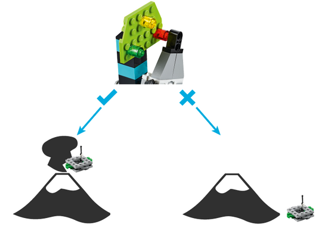
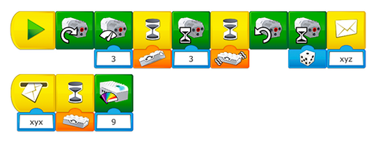
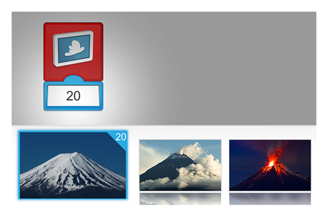

La evaluación no tiene por qué abarcar las cinco habilidades, puede centrarse en las habilidades más relevantes para usted y sus estudiantes.
Conseguir que los estudiantes identifiquen patrones (generalización)
Un patrón es algo que puede aplicarse de la misma forma en diferentes situaciones.
Aquí puede ver algunos patrones que sus estudiantes deberían tener en cuenta en este proyecto:
¿Cómo señalará la alarma la fase del volcán?
¿Cómo puede utilizarse el sensor de inclinación en este modelo?
¿Qué movimiento o movimientos se repetirán?
Conseguir que los estudiantes programen una secuencia de acciones (pensamiento algorítmico)
Los estudiantes programarán sus alarmas para que avise cuando la aguja se detenga en la posición roja. Pídales que describan los pasos que quieren programar (p. ej.: cuando la alarma se agite, activar el motor, esperar a ver si para, dar la señal apropiada según la posición del dispositivo).
Los estudiantes pueden recurrir a un organigrama para explicar las condiciones relacionados con los objetos (p. ej.: el vehículo, el dron, el animal). Por ejemplo:

Haga que documenten este proceso usando la herramienta de documentación.
Conseguir que los estudiantes mejoren sus soluciones (evaluación)
Una de las dificultades de este proyecto es entender el vínculo entre la alarma, el programa y los objetos que deben moverse. Haga que sus estudiantes evalúen si su solución cumple con los siguientes criterios:
La alarma se activa cuando se agita
El motor se enciende durante un número aleatorio de segundos
Se utiliza el sensor de inclinación para detectar la fase del volcán
Cada vez que se alcanza la fase roja, el dron se desplaza al interior del volcán
Puede organizar una sesión de puesta en común entre equipos o en grupos para que los estudiantes puedan intercambiar estrategias o consejos que puedan ayudarles a mejorar sus soluciones.
Ayuda para la programación
Usar del sensor de inclinación
La fase roja de la alarma se alcanza cuando el sensor de inclinación se inclina hacia abajo.
Los estudiantes pueden asignar diferentes tipos de alarma a esa fase, como un sonido, una luz o imágenes del volcán en erupción.

Usar las imágenes del volcán en la pantalla
Hemos proporcionado imágenes de las fases del volcán que los estudiantes pueden usarlas en la pantalla.
